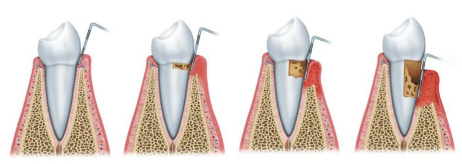

Routine Teeth Cleanings

For most patients, a routine teeth cleaning every six months is recommended to minimize plaque buildup and keep gums healthy, breath fresh, and teeth looking clean and bright. Plaque is a bacterial coating that, if left on the teeth, contributes directly to tooth decay and gum disease. At the practice of Don B. Ruhnke, DDS, we focus on providing gentle, thorough cleanings for patients of all ages, including comprehensive family and pediatric care in Kingsville, TX.
Whether you are visiting for routine preventative maintenance or gum disease management, our goal is to ensure your visit is as comfortable as possible. Be sure to ask about our Comfort Digital X-rays during your appointment! Contact our office today to schedule your next teeth cleaning.
Periodontal Cleanings
For patients requiring specialized care, we offer periodontal (gum) therapy and deep cleanings. Just as a building requires a solid foundation, your teeth rely on healthy gums and strong supporting bone. Periodontal disease is an infection that can affect a single tooth or your entire mouth. Left untreated, the buildup of bacteria, plaque, and tartar causes inflammation, bleeding gums, and permanent bone loss—which can ultimately lead to tooth loss.
Furthermore, research links active periodontal disease to systemic health concerns, including heart disease, stroke, diabetes, and complications during pregnancy. If you show signs of gum disease, our team will work with you to halt its progression through tailored treatment and more frequent periodontal maintenance care. Your long-term oral and overall health is our top priority.
Take the Next Step Toward a Healthy Smile
Call (361) 592-8521 today to schedule your cleaning appointment with Dr. Ruhnke in Kingsville, TX!